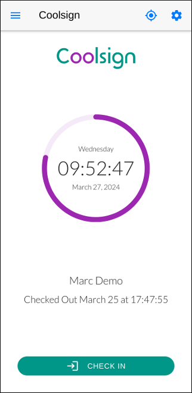

Coolsign is a free solution for employee attendance in Odoo 17. Using it, an employee can easily check in and out using his or her smartphone, and the detected location will be saved in the attendance record. Coolsign consists of a backend part, the hr_coolsign custom module, and a frontend one, an Android app.
The custom module, once installed, creates a Coolsign tab in the employee form, containing two fields. With the first, Enable Coolsign App, the HR Manager can enable or disable the use of the app for that employee. The second one, Coolsign App ID, records the ID which uniquely identifies the smartphone. If the employee configured the app on another smartphone, the ID would change so only one smartphone can be used by the employee at any given time.
The Coolsign Android app is available in this repository as an apk file ready to be installed. Three screenshots of the app follow:

In the Coolsign app Settings page the login credentials must be specified. In a production environment the Hostname is usually something like https://odoo.companyname.com. If you are a developer and Odoo is running on your developer box, use the LAN IP followed by the port, for example http://192.168.1.2:8069.
Also, login and password of the user related to the employee is needed in order to establish a connection to Odoo - employees without the associated user cannot connect to Odoo. Remember that, instead of the password, you can use an API key: create one from Account Security of your Odoo Profile.
Finally, on smartphones with Android 12+, make sure that in the location permission of the Coolsign app the Use precise location option is on.
If you have any questions feel free to write to apmatic@outlook.it.